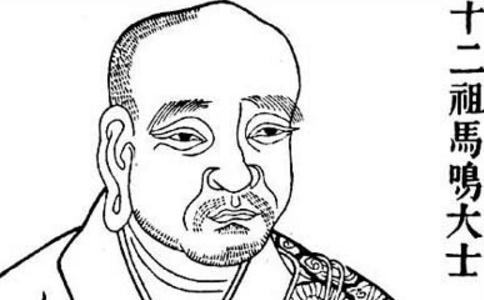

约二千一百年前，古印度有一位著名外道论师，他拥有超凡智慧，辩才无量，知识广博，堪称当代大智者。他曾经与其他外道进行很多激烈辩论，每一次他都得到胜利。最后没有任何外道，敢接受他的挑战。为对真理的一份执著，最后他还是向当时盛极一时的
他来到论法战场那欗陀学院之时，气焰逼人，更跨下海口：“若我今天论法失败，便投恒河自尽。”负责镇守学院四门的大师，对于这位来人的声势，可说是司
这时候四门
他终于心悦诚服地明白，自己为什么惨败在佛法之下。令他更为惊叹的，就是典籍中，伟大的
而马鸣菩萨在密教中，广为人知的莫过于其编撰的《事师五十法颂》。文中充分反映出他对佛法，与及佛陀这伟大导师之拜服。另一方面，更深彻地启导出金刚乘修持的关键，唯有依止传承根本上师，才能体证果乘法门的要义。
以下把节录自“
马鸣菩萨集
西天译经三藏宣梵大师日称等奉诏译
依诸经律秘密教，略出承事师仪轨。
闻已爱乐发净心，当获如来金刚智。
一、若于灌顶师，三时伸礼奉，则为己供养，十方诸如来。
二、起最上恭敬，合掌以持花，散彼曼拏罗，头面接足礼。
三、彼师或在家，及新受具戒，置经像于前，则息诸疑谤。
四、若出家弟子，常净心承事，已坐当起迎，唯除于敬礼。
五、彼师及弟子，当互审其器；若不先观察，同得越法罪。
六、若忿恚无慈，贪爱多散乱，傲易恃种族，以慧当拣择。
七、具戒忍悲智，尊重无谄曲，了秘密仪范，博闲诸论议。
八、善达
九、若彼求法者，于师生轻毁，则谤诸如来，常得诸苦恼。
十、由增上愚痴，而获于现报，为恶曜执持，重病相缠缚。
十一、王法所逼切，及毒蛇伤螫，冤贼水火难，非人得其便。
十二、彼频那夜迦，常作诸障碍，从此而命终，即堕于恶趣。
十三、勿令阿阇黎，少分生烦恼；无智相违背，定入阿鼻狱。
十四、受种种极苦，说之深可怖，由谤阿阇黎，于中常止住。
十五、彼阿阇黎者，弘持
十六、常于阿阇黎，承事而供养，发生尊重心，则蠲除障恼。
十七、又复于师所，乐行于喜舍，不吝于己身，何况于财物。
十八、于无量亿劫，勇猛勤修习，今始证菩提，斯极为希有。
十九、善护其深誓，供养诸如来，恭敬阿阇黎，等同一切佛。
二十、若于己所有，最上诸珍玩，永无尽菩提，诚心而奉献。
廿一、施佛阿阇黎，念念常增长，是最胜
廿二、如是求法者，具戒忍功德，不虚诳于师，当获金刚智。
廿三、若足踏师影，获罪如破塔，于床坐资具，骑蓦罪过足。
廿四、若师所教诲，
廿五、由依止师故，所作皆成就，现乐及生天，何敢违其命？
廿六、守护师财物，犹若己身命，于彼执侍人，如亲常敬奉。
廿七、不应于师前，覆顶及乘御，翘足手叉腰，安然而坐卧。
廿八、或事缘令坐，勿舒于双足，常具诸威仪，师起速当起。
廿九、若于经行处，不应随举步，端谨立于傍，无弃于涕唾。
三十、亦勿于师前，私窃而言说，及邻近语笑，歌舞作唱等。
三一、或令坐或起，各安徐礼敬，或于险路中，自己作前导。
三二、又不应于前，身现疲劳相，屈指节作声，倚柱及墙壁。
三三、或浣衣濯足，及澡浴等事，先白师令知，所作无令见。
三四、又复于师名，不应辄称举，设有固问者，当示之一字。
三五、师或令干集，当伺其遗使，于彼所作事，忆持常不忘。
三六、或笑嗽伸呿，则以手遮口，若有事启闻，当曲躬软语。
三八、闻已当奉持，舍离于憍慢，常如初适嫁，低颜甚惭赧。
三九、于彼严身具，无复生爱乐，与善非相应，皆思惟远离。
四十、常慕于师德，不应窥小过，随顺获成就，求过当自损。
四一、说法度弟子，曼拏罗护摩，城邑同师居，无旨不应作。
四二、或说法所得，净施诸财物，悉以奉其师，随得而可用。
四三、同学及法裔，不应为弟子，亦不于师前，受承事礼敬。
四四、若以物上师，二手持奉献，师或有所施，常恭敬顶受。
四五、自专修正行，常忆持不忘，他或非律仪，爱语相教示。
四六、若师所教敕，或病缘不作，常作礼咨陈，斯则无其咎。
四七、常令师欢喜，离诸烦恼事，当勤而行之，恐繁故不述。
四八、彼金刚如来，亲如是宣说，及余教所明，依师获成就。
四九、若弟子清净，能
五十、及授秘密教，令作正
若能随顺师行学，则成一切诸功德。
以我所集斯善因，愿与众生速成佛。